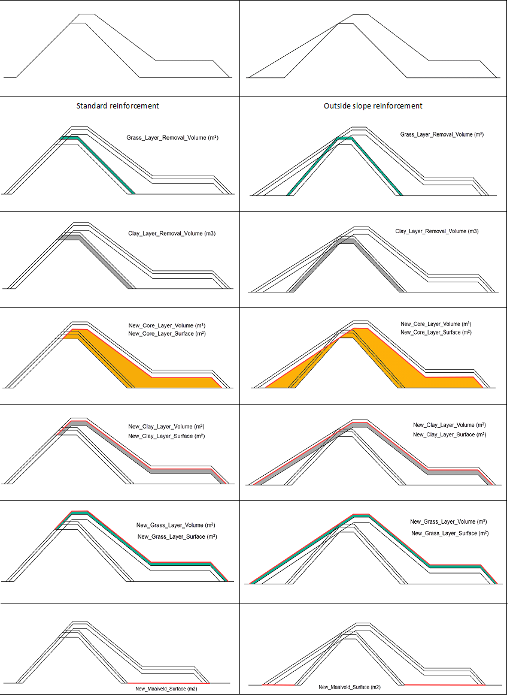

Cost report¶
A Koswat report is divided in different parts:
- Summary report: A summary containing all 'location reports'.
- Location report: Which profile reinforcements can be applied to each location based on their surroundings and reinforcement properties (
MultiLocationProfileCostReport). - Profile report: (
ProfileCostReport), what are the (material) volume costs associated when applying a given reinforced profile . - Layer report: A sub report of the 'profile report' which breaks down the different costs of each one of the layers. This can be seen in Image 1 Volume costs.
 |
|---|
| Image 1. Volume costs |
Generated files¶
After running a Koswat analysis, several files and directories will be generated, usually the structure will be as follows:
Dike profile section scenarios -> Scenario -> Generated files
- Dike profile - scenarios directory: Each dike can be run using different scenarios.
- Scenario: Scenario being applied to the selected dike profile.
- Dike section: The selected dike section being analyzed.
- Generated files: A combination of images and a 'csv' matrix result.
- Images: Visual description of each of the possible reinforcements being applied.
- summary_costs.csv: A csv file containing all the costs information of the summary.
- Represents the Summary, Profile and Layer report.
- summary_locations.csv: A csv file containing per-location a breakdown of available reinforcements and selected reinforcement ( see strategies).
- Represents the Location report.
Example using a summarized view of the output tree directory when running the acceptance test test_main.test_given_valid_input_succeeds:
acceptance
| koswat.log
|
+-- results_output
| +-- dike_10-1-1-A-1-A
| | +-- scenario_scenario1
| | | | Grondmaatregel profiel.png
| | | | Kistdam.png
| | | | Kwelscherm.png
| | | | summary_costs.csv
| | | | summary_locations.csv
| | | | Stabiliteitswand.png
| | | |
| | | +-- Grondmaatregel profiel
| | | | added_Grondmaatregelprofiel_CLAY.png
| | | | added_Grondmaatregelprofiel_GRASS.png
| | | | added_Grondmaatregelprofiel_SAND.png
| | | | removed_Grondmaatregelprofiel_CLAY.png
| | | | removed_Grondmaatregelprofiel_GRASS.png
| | | +-- Kistdam
| | | | ...
| | |
| | | +-- Kwelscherm
| | | | ...
| | |
| | | +-- Stabiliteitswand
| | | | ...
| | |
| | +-- scenario_scenario2
| | | ...